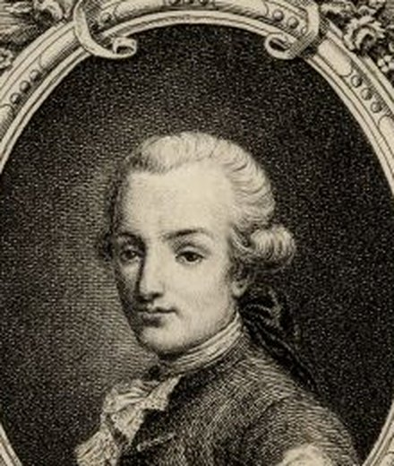

Giuseppe Giannotti cerca la poesia dove la materia resiste: una luce, un cassetto, un pontile d'inverno. Non spiega, lascia che l'immagine faccia il suo lavoro. Vive ad Aulla, in Lunigiana, dove fa il farmacista. La sera conduce Stregati, un programma di poesia al buio.
Garder le calme devant la dissonance
Claude Sautet, epitaffio a Montparnasse
Novità
Ultimi quindici giorni
Pubblicato il bando della IV edizione del Premio «La Via dei Libri» di Pontremoli: sei sezioni, scadenza 5 dicembre 2026. Il bando
Stregati: la puntata su Fernanda Romagnoli. Su YouTube
Stregati, puntata speciale: Ezra Pound, nel giorno del suo compleanno. Su YouTube
Terzo premio per La quercia al contest di poesia del Premio Internazionale Luce Apuana – Carità e Donarsi. I premi
Stregati: la puntata su Riccardo Mannerini. Su YouTube
Un articolo su Pascale Ogier e François Truffaut, morti a Parigi a quattro giorni di distanza nell'ottobre 1984, e sulla poesia che li tiene insieme. Leggi
Apre la newsletter: una lettera a settimana dopo Stregati, il poeta della puntata e due osservazioni. Iscriviti
Pubblicato il bando del Premio Intercontinentale di Arte Letteraria «Le Nove Muse» 2026–27: Parma, scadenza 30 marzo 2027. La pagina del premio
Stregati: la puntata su Arthur Rimbaud. Su YouTube
Secondo premio al Premio Pasolini-Parigi, poesia edita, per La Costruzione di un'Immagine. I riconoscimenti
Poesia del giorno

Ritratto: incisione di Gaujean, XIX secolo · Wikimedia Commons · pubblico dominio
Nicolas Gilbert
Nato a Fontenoy-le-Château il 15 dicembre 1750 · morto a Parigi il 16 novembre 1780
Nicolas Gilbert arrivò a Parigi dalla Lorena poco dopo il 1770, con i primi versi in tasca e una lettera di raccomandazione per D'Alembert, che lo ricevette freddamente. Respinto due volte ai concorsi dell'Académie française, si vendicò con la satira: Le Dix-huitième siècle (1775) attacca i filosofi e chiude facendo il nome di Voltaire. Morì a ventinove anni. Alfred de Vigny ne fece, in Stello, il simbolo del poeta sacrificato.
È la nona delle sue odi, «imitata da più salmi». Secondo la nota dell'edizione del 1823 la compose otto giorni prima di morire. Comincia come una preghiera contro i nemici e finisce in un congedo dal mondo: «Au banquet de la vie, infortuné convive, / J'apparus un jour, et je meurs».
Ode imitée de plusieurs psaumes
J’ai révélé mon cœur au Dieu de l’innocence ;
Il a vu mes pleurs pénitents ;
Il guérit mes remords, il m’arme de constance :
Les malheureux sont ses enfants.
Mes ennemis, riant, ont dit dans leur colère :
Qu’il meure, et sa gloire avec lui !
Mais à mon cœur calmé le Seigneur dit en père :
Leur haine sera ton appui.
À tes plus chers amis ils ont prêté leur rage :
Tout trompe ta simplicité :
Celui que tu nourris court vendre ton image,
Noire de sa méchanceté.
Mais Dieu t’entend gémir, Dieu vers qui te ramène
Un vrai remords, né des douleurs ;
Dieu qui pardonne enfin à la nature humaine
D’être foible dans les malheurs.
J’éveillerai pour toi la pitié, la justice
De l’incorruptible avenir ;
Eux-même épureront, par leur long artifice,
Ton honneur qu’ils pensent ternir.
Soyez béni, mon Dieu, vous qui daignez me rendre
L’innocence et son noble orgueil ;
Vous qui, pour protéger le repos de ma cendre,
Veillerez près de mon cercueil.
Au banquet de la vie, infortuné convive,
J’apparus un jour, et je meurs :
Je meurs, et sur ma tombe, où lentement j’arrive,
Nul ne viendra verser des pleurs.
Salut, champs que j’aimois, et vous, douce verdure,
Et vous, riant exil des bois !
Ciel, pavillon de l’homme, admirable nature,
Salut pour la dernière fois !
Ah ! puissent voir long-temps votre beauté sacrée
Tant d’amis sourds à mes adieux !
Qu’ils meurent pleins de jours ! que leur mort soit pleurée !
Qu’un ami leur ferme les yeux !
Ode IX, da Œuvres complètes, Dalibon, Parigi 1823, pp. 134–135 · grafia dell’edizione · testo da Wikisource
Foto: autore sconosciuto, anni Venti, collezione privata · Wikimedia Commons · pubblico dominio
Lalla Romano
Nata a Demonte l’11 novembre 1906 · morta a Milano il 26 giugno 2001
Lalla Romano, pronipote del matematico Giuseppe Peano, cominciò dalla pittura. Esordì in versi nel 1941 con Fiore, pubblicato da Frassinelli a Torino, che piacque a Montale. Poi venne la prosa, fino al premio Strega del 1969 con Le parole tra noi leggere.
«Cielo» è in Fiore. È un tramonto dipinto come una natura morta: il cielo è un fiore dagli orli rossi che si posa sulla terra e appassisce, e la luna ne è lo stame d'oro. Lo sguardo è quello di una pittrice.
Cielo
Simile a un fiore il cielo
dagli orli vermigli posa
lieve sulla terra oscura.
[…]
Pende nel cielo profondo,
stame d’oro, la luna.
Frammento. Lalla Romano è protetta dal diritto d’autore: «Cielo», da Fiore (Frassinelli, Torino 1941), si legge intera in Opere, a cura di Cesare Segre, vol. I, Mondadori, Milano 1991, p. 49. I versi sono citati da Elisa Donzelli, «La natura morta della poesia: sul Fiore di Lalla Romano».
Nata a Parigi il 15 novembre 1876 · morta a Parigi il 30 aprile 1933
Anna de Noailles, nata principessa di Brancovan, figlia di un principe romeno e di una madre greca nata a Costantinopoli, esordì nel 1901 con Le Cœur innombrable Nel 1922 fu la prima donna ricevuta all'Accademia reale di lingua e letteratura francese del Belgio, nel 1931 la prima nominata commendatore della Legion d'onore.
«La Vie profonde» è nel primo libro. Essere nella natura come un albero umano, sentire la linfa del mondo salire nelle mani, essere insieme il giorno che sale e l'ombra che scende.
La Vie profonde
Être dans la nature ainsi qu’un arbre humain,
Étendre ses désirs comme un profond feuillage,
Et sentir, par la nuit paisible et par l’orage,
La sève universelle affluer dans ses mains.
Vivre, avoir les rayons du soleil sur la face,
Boire le sel ardent des embruns et des pleurs
Et goûter chaudement la joie et la douleur
Qui font une buée humaine dans l’espace.
Sentir, dans son cœur vif, l’air, le feu et le sang
Tourbillonner ainsi que le vent sur la terre :
— S’élever au réel et pencher au mystère,
Être le jour qui monte et l’ombre qui descend.
Comme du pourpre soir aux couleurs de cerise,
Laisser du cœur vermeil couler la flamme et l’eau,
Et comme l’aube claire appuyée au coteau
Avoir l’âme qui rêve, au bord du monde assise…
da Le Cœur innombrable, Calmann-Lévy, Parigi 1901, pp. 73–74 · testo da Wikisource
Frontespizio dei Sonetti, Padova 1767 · Internet Archive · pubblico dominio
Caterina Dolfin
Nata a Venezia l’8 maggio 1736 · morta a Venezia il 14 novembre 1793
Caterina Dolfin perse il padre, l'avvocato Giovanni Antonio Dolfin, da ragazza. Nel 1767 pubblicò a Padova i sonetti in sua memoria, con una prefazione senza falsa modestia: «Rendo or pubbliche queste Poesie, perchè le feci per pubblicarle». In Arcadia si chiamava Dorina Nonacrina. Nel 1772 ottenne l'annullamento del matrimonio con Marcantonio Tiepolo e sposò Andrea Tron, patrizio ricchissimo e influente; nel suo salotto passava Gasparo Gozzi.
Nel quinto sonetto si guarda allo specchio per ritrovare nel proprio viso quello del padre. Il volto c'è, l'animo no, e il pianto ricomincia.
Allo specchio talor, Padre, m’appresso
Allo specchio talor, Padre, m’appresso,
Lieta di riveder nel mio sembiante
La cara forma del tuo volto istesso,
Qual pingerla potria Zeusi, o Timante.
E il tuo veggendo nel mio volto impresso,
Trova requie il mio cor per breve istante,
Poi più fiero il dolor torna sovr’esso,
E ancor lo strugge più crudel, che innante.
Che se vedo il tuo volto, e il biondo crine,
Non mi sento nel sen per mio rossore
La ferma anima tua di laude degna.
Così passa il mio pianto ogni confine:
Misera me! chi per pietà m’insegna
A far che il mio somigli al tuo gran cuore?
Sonetto V, da Sonetti di Caterina Dolfino Tiepolo in morte di Gio. Antonio Dolfino P. V., Padova, Stamperia Penada, 1767, p. XVII
Ritratto: Agnolo Bronzino, 1555–1560, Firenze, Palazzo Vecchio · Wikimedia Commons · pubblico dominio · in bianco e nero
Laura Battiferri
Nata il 13 novembre 1523 · morta a Firenze il 3 novembre 1589
Laura Battiferri nel 1550 sposò in seconde nozze lo scultore e architetto Bartolomeo Ammannati. Nella loro casa di Firenze e nella villa di Maiano passavano Benedetto Varchi, Annibal Caro, Benvenuto Cellini e Agnolo Bronzino, che la ritrasse di profilo con un libro di Petrarca aperto tra le mani. Nel 1560 pubblicò da Giunti Il primo libro delle opere toscane.
È il primo dei sonetti spirituali stampati in coda alla sua traduzione dei Salmi penitenziali. Si rivolge a Dio con lo «stile cangiato»: ha cercato il pregio terreno, ora si pente. L'ultimo verso è di Petrarca, preso intero dal sonetto che apre il Canzoniere: «che quanto piace al mondo è breve sogno».
Ecco, Signore (e n’è ben tempo omai)
Ecco, Signore (e n’è ben tempo omai)
ch’a te rivolgo il mio cangiato stile:
non lo spregiar, s’a le tue orecchie umile
priego divoto e pio giunse giamai;
quanto pur dianzi, ahi lassa, invan cercai
farmi a’ miglior, ma sol di fuor simile,
quanto pregio stimai terreno e vile,
tanto il celeste, e te mio Dio, spregiai.
Ecc’or che tua Pietà quest’alma ha desto,
alto Signore, al suo maggior bisogno;
onde ’l suo fallo apertamente vede,
ch’a te pentita ogn’or priega mercede,
perché con lungo duol t’è manifesto
che quanto piace al mondo è breve sogno.
da I sette salmi penitentiali, tradotti da Laura Battiferra degli Ammannati, con alcuni suoi sonetti spirituali, 1566 · grafia leggermente ammodernata · stampa originale su Internet Archive
Ritratto: Miguel Cabrera, 1750 circa, Museo Nacional de Historia, Città del Messico · Wikimedia Commons · pubblico dominio
Juana Inés de la Cruz
Nata a San Miguel Nepantla il 12 novembre 1648 (secondo altre fonti nel 1651) · morta a Città del Messico il 17 aprile 1695
Juana Inés de la Cruz imparò a leggere da bambina e studiò il latino quasi da sola. A vent'anni entrò nel convento delle girolamine di Città del Messico, dove scrisse poesie, teatro e prosa. I suoi versi uscirono a Madrid nel 1689 con il titolo Inundación castálida.
Sono redondillas, quartine di ottonari. Il titolo della prima edizione dice tutto: gli uomini accusano nelle donne quello che loro stessi causano. Le corteggiano e poi le chiamano leggere, le vogliono facili e insieme oneste. Diciassette strofe contro il doppio metro, scritte da una suora nel Seicento.
Hombres necios que acusáis
Hombres necios que acusáis
a la mujer sin razón,
sin ver que sois la ocasión
de lo mismo que culpáis:
si con ansia sin igual
solicitáis su desdén,
¿por qué queréis que obren bien
si las incitáis al mal?
Combatís su resistencia
y luego, con gravedad,
decís que fue liviandad
lo que hizo la diligencia.
Parecer quiere el denuedo
de vuestro parecer loco,
al niño que pone el coco
y luego le tiene miedo.
Queréis, con presunción necia,
hallar a la que buscáis,
para pretendida, Thais,
y en la posesión, Lucrecia.
¿Qué humor puede ser más raro
que el que, falto de consejo,
él mismo empaña el espejo
y siente que no esté claro?
Con el favor y el desdén
tenéis condición igual,
quejándoos, si os tratan mal,
burlándoos, si os quieren bien.
Opinión, ninguna gana:
pues la que más se recata,
si no os admite, es ingrata,
y si os admite, es liviana.
Siempre tan necios andáis
que, con desigual nivel,
a una culpáis por cruel
y a otra por fácil culpáis.
¿Pues cómo ha de estar templada
la que vuestro amor pretende,
si la que es ingrata ofende,
y la que es fácil enfada?
Mas, entre el enfado y pena
que vuestro gusto refiere,
bien haya la que no os quiere
y quejaos enhorabuena.
Dan vuestras amantes penas
a sus libertades alas,
y después de hacerlas malas
las queréis hallar muy buenas.
¿Cuál mayor culpa ha tenido
en una pasión errada:
la que cae de rogada,
o el que ruega de caído?
¿O cuál es más de culpar,
aunque cualquiera mal haga:
la que peca por la paga,
o el que paga por pecar?
Pues ¿para qué os espantáis
de la culpa que tenéis?
Queredlas cual las hacéis
o hacedlas cual las buscáis.
Dejad de solicitar,
y después, con más razón,
acusaréis la afición
de la que os fuere a rogar.
Bien con muchas armas fundo
que lidia vuestra arrogancia,
pues en promesa e instancia
juntáis diablo, carne y mundo.
Ritratto: incisione di Gaetano Bonatti, 1837 · Wikimedia Commons · pubblico dominio (CC0)
Iacopo Vittorelli
Nato a Bassano del Grappa il 10 novembre 1749 · morto a Bassano del Grappa il 12 giugno 1835
Iacopo Vittorelli studiò dai gesuiti a Brescia. Le sue anacreontiche uscirono nel 1784 e passarono presto alla musica: Donizetti ne musicò una nel 1815, Verdi scelse questa per le Sei romanze del 1838. Nel 1806 l'editore Remondini di Bassano stampò le Rime in un'edizione rivista dall'autore.
Parla un morto. La donna che non lo aiutò quando era vivo viene a piangere sulla sua tomba, e lui rifiuta le lacrime e i fiori: arrivano tardi. Quattro strofe di settenari, nessuna consolazione.
Non t’accostare all’urna
Non t’accostare a l’Urna,
Che l’ossa mie rinserra.
Questa pietosa terra
È sacra al mio dolor.
Odio gli affanni tuoi;
Ricuso i tuoi giacinti.
Che giovano a gli estinti
Due lagrime, o due fior?
Empia! Dovevi allora
Porgermi un fil d’aita,
Quando traea la vita
Fra palpiti e sospir.
A che d’inutil pianto
Assordi la foresta?
Rispetta un’Ombra mesta
E lasciala dormir.
Anacreontica XIII, da Rime, nuova edizione dall’autore medesimo accresciuta, Tipografia Remondiniana, Bassano 1806 · testo da Wikisource
Copertina di Tutte le poesie, Garzanti, 2017 · riprodotta per illustrare la fonte del frammento
Mario Benedetti
Nato il 9 novembre 1955 · morto a Piadena il 27 marzo 2020
Mario Benedetti passò i primi vent'anni a Nimis, in Friuli, il paese dei genitori. Con Mondadori pubblicò Umana gloria (2004), Pitture nere su carta (2005) e Tersa morte (2013); nel 2017 Garzanti raccolse Tutte le poesie. Tradusse in italiano Michel Deguy.
«Devo tenerlo per mano»
Ma io nella mia vita non ho scritto nessuna poesia,
io nella mia vita non ho letto nessuna poesia.
E questa nessuno l'ha scritta, nessuno l'ha letta.
La poesia parte da un gesto minimo, tenere un bambino per mano, e si allarga alle madri, ai cuccioli, ai vitelli che dormono, fino ai figli che «hanno solamente le nostre ossa». In chiusa Benedetti dice di non aver mai scritto né letto una poesia, e che questa non l'ha scritta né letta nessuno. Non è una negazione: la poesia non è scritta da qualcuno, è. Come le cose che ha appena nominato, e come aveva già detto Montale in «Asor».
Frammento. Mario Benedetti è protetto dal diritto d'autore: la poesia, dalla sezione «Madre» di Tersa morte (Mondadori, 2013), si legge intera in Tutte le poesie, a cura di Stefano Dal Bianco, Antonio Riccardi e Gian Mario Villalta, Garzanti, 2017.
Foto: Maksim Dmitriev, Nižnij Novgorod, 1901 · Wikimedia Commons · pubblico dominio
Ivan Bunin
Nato a Voronež il 22 ottobre 1870 · morto a Parigi l'8 novembre 1953
Ivan Bunin vinse il premio Puškin per la poesia nel 1903 e di nuovo nel 1909. Nel 1920 lasciò la Russia da Odessa e si stabilì a Parigi. Nel 1933 fu il primo scrittore russo a ricevere il premio Nobel per la letteratura.
La poesia fu scritta tra il 1903 e il 1905 e uscì nel 1906 sulla rivista «Znanie». Un pittore resta solo in una dacia d'autunno dopo che lei se n'è andata: la pioggia sull'acqua, il cavalletto al buio, il camino da accendere.
Одиночество (Solitudine)
И ветер, и дождик, и мгла
Над холодной пустыней воды.
Здесь жизнь до весны умерла,
До весны опустели сады.
Я на даче один. Мне темно
За мольбертом, и дует в окно.
Вчера ты была у меня,
Но тебе уж тоскливо со мной.
Под вечер ненастного дня
Ты мне стала казаться женой…
Что ж, прощай! Как-нибудь до весны
Проживу и один — без жены…
Сегодня идут без конца
Те же тучи — гряда за грядой.
Твой след под дождём у крыльца
Расплылся, налился водой.
И мне больно глядеть одному
В предвечернюю серую тьму.
Мне крикнуть хотелось вослед:
«Воротись, я сроднился с тобой!»
Но для женщины прошлого нет:
Разлюбила — и стал ей чужой.
Что ж! Камин затоплю, буду пить…
Хорошо бы собаку купить.
Traduzione di servizio
E il vento, e la pioggerella, e la foschia
sulla fredda distesa deserta dell'acqua.
Qui la vita è morta fino a primavera,
fino a primavera si sono svuotati i giardini.
Sono solo nella dacia. Al cavalletto
è buio, e dalla finestra entra vento.
Ieri eri da me,
ma con me ormai ti annoiavi.
Sul far della sera di quel giorno di maltempo
cominciavi a sembrarmi mia moglie…
E allora, addio! In qualche modo fino a primavera
vivrò anche da solo, senza moglie…
Oggi passano senza fine
le stesse nuvole, schiera dopo schiera.
La tua orma sotto la pioggia sui gradini di casa
si è sfatta, si è riempita d'acqua.
E mi fa male guardare da solo
il buio grigio che precede la sera.
Volevo gridarti dietro:
«Torna, mi sono legato a te!»
Ma per una donna il passato non esiste:
ha smesso di amarmi, e le sono diventato estraneo.
E va bene! Accenderò il camino, berrò…
Sarebbe bello comprarsi un cane.
testo dell'edizione Стихотворения, a cura di T. Dvinjatina, Vita Nova, San Pietroburgo 2014, vol. 1, pp. 271-272 (via Wikisource russa) · in originale
Ritratto: Jean-François Bosio, Metropolitan Museum of Art, New York · Wikimedia Commons · pubblico dominio (CC0) · in bianco e nero
Giovanni Fantoni
Nato a Fivizzano il 28 gennaio 1755 · morto a Fivizzano il 7 novembre 1807
Giovanni Fantoni entrò in Arcadia nel 1776 con il nome di Labindo Arsinoetico. Nelle Odi, la cui prima edizione uscì a Massa nel 1782, portò nella poesia italiana i metri di Orazio, precorrendo Carducci. Fu giacobino: imprigionato più volte, combatté con Masséna nell'assedio di Genova e nel 1800 insegnò eloquenza a Pisa, finché il governo lo sospese per il tono politico delle lezioni.
L'ode è del 1782 ed è dedicata a Carlo Emanuele Malaspina, marchese di Fosdinovo. Il poeta lo invita nella sua capanna accanto al fiume, tra la pesca delle trote, la tavola e il vino. Fuori, sul mare, si combatte la guerra per l'America.
A Carlo Emanuele Malaspina, marchese di Fosdinovo
Carlo, germe d’eroi, terror di belve,
dall’infallibil braccio;
invano fiuta per l’incerte selve,
rendi Melampo al laccio.
Crescono l’ombre, con le fosche piume
l’aura carezza il margine:
questa è la mia capanna, accanto ho il fiume;
ma la difende un argine.
Sacra è agli amici: ti riposa. Intanto
mando le reti a tendere.
Fille, t’affretta; chiama Elpino. Oh quanto,
quanto mai tarda a scendere!
Ma giunge! Vanne ove la rupe bruna
l’onde canute insultano:
l’insidie intorno ai cavi sassi aduna:
le trote ivi si occultano.
Tu prepara, idol mio, la mensa; i lini
disponi; un bacio donami;
spoglia di mirto i rannodati crini,
ed il bicchier coronami.
Mentre il Batavo dorme e siede stolto,
dagli avi suoi degenere,
sul marmo ov’è di Ruyther sepolto
il glorioso cenere,
e solca Rodney il trionfato mare
della contesa America,
onde vinta lo fugge e mesta appare
la sorte gallo-iberica;
beviamo. Un trono non invidio: un trono
non vale il mio ricovero.
Scarco di cure e di rimorsi io sono,
né chi ha un amico è povero.
Mi rese il cielo allor ricco a bastanza,
che appresi ad esser utile,
e l’avida a frenar folle speranza
di un desiderio inutile.
da Odi, libro I, IX, in Poesie, a cura di Gerolamo Lazzeri, Laterza, Bari 1913 · alcune fonti indicano come data di morte il 1° novembre; qui si segue il Dizionario Biografico degli Italiani
Madeleine Riffaud nella Resistenza si faceva chiamare «Rainer», in omaggio a Rilke. Il 23 luglio 1944 uccise un ufficiale tedesco su un ponte della Senna; catturata e torturata dalla Gestapo, fu condannata a morte e liberata ad agosto con uno scambio di prigionieri. Nel 1945 uscì la sua prima raccolta, Le Poing fermé, con la prefazione di Paul Éluard. Fu poi giornalista in Algeria e in Vietnam.
«La liberté c'est ce cours d'eau…»
C'est un fleuve sans rive et notre foule s'y perdra,
Se fondra, fraternelle, à celle de partout.
Demain, ceux qui vivront trouveront naturel
D'être au large, au soleil, sur la mer Liberté.
La libertà, qui, non è una parola alta. È un fiume che passa sotto casa: ci si attinge l'acqua, ci si bagnano le ragazze stanche, ci si lavano le giacche da lavoro. Riffaud l'aveva conquistata con le armi a vent'anni. Nella poesia la consegna a chi verrà dopo, che la troverà naturale.
Frammento in originale. L'opera di Madeleine Riffaud è protetta dal diritto d'autore.
Foto: anni Quaranta, autore sconosciuto · Wikimedia Commons · pubblico dominio in Italia
Fernanda Romagnoli
Nata a Roma il 5 novembre 1916 · morta a Roma nel giugno 1986
Fernanda Romagnoli si diplomò in pianoforte al Conservatorio di Santa Cecilia a diciotto anni, poi fece l'impiegata e la maestra elementare. Pubblicò poco e a lunghi intervalli. Il libro più importante, Il tredicesimo invitato, uscì da Garzanti nel 1980, e Vittorio Sereni cercò di farlo conoscere. Dopo la morte fu dimenticata; oggi le sue poesie sono raccolte in La folle tentazione dell'eterno, a cura di Paolo Lagazzi (Interno Poesia, 2022).
Il tredicesimo invitato
E all'improvviso capisce
che siede un'ombra al suo posto:
che – entrando – lui è rimasto fuori.
Il tredicesimo invitato è lei. Ma è una donna che scrive, e l'invitato è un uomo: si guarda da fuori, anche nella grammatica. Non dice mai di sentirsi esclusa. Fa vedere il panchetto aggiunto all'ultimo momento, il piatto scompagnato.
Giuseppe le ha dedicato la puntata di Stregati del 3 novembre. Su YouTube
Frammento. Fernanda Romagnoli è protetta dal diritto d'autore: Il tredicesimo invitato, dal libro omonimo (Garzanti, 1980), si legge intera in La folle tentazione dell'eterno, a cura di Paolo Lagazzi, Interno Poesia, 2022.
Nata a Herat il 27 dicembre 1980 · morta a Herat il 4 novembre 2005
Nadia Anjuman crebbe a Herat sotto i talebani e frequentò la Scuola dell'ago d'oro, un circolo clandestino in cui le donne studiavano letteratura fingendo di imparare il cucito. Dopo il 2001 si laureò in letteratura all'Università di Herat e pubblicò Gul-e dodi, «Fiore di fumo». Morì a Herat a ventiquattro anni: il marito ammise di averla picchiata; la causa della morte non fu mai accertata e il caso fu chiuso come suicidio.
«Nessuna voglia di aprire la mia bocca»
Non sono un fragile pioppo
che ogni vento scuote.
sono una donna afgana—
solo urlare ha un senso.
La poesia comincia con il rifiuto di aprire bocca e finisce in un grido. In mezzo ci sono un'ala presa in trappola e una melodia che non si dimentica. Nella chiusa il paragone con il pioppo viene scartato, e al suo posto resta il nome di sé. Per questo la sua poesia è un baluardo contro la violenza sulle donne: la voce che volevano chiudere continua a parlare.
Frammento. L'opera di Nadia Anjuman è protetta dal diritto d'autore, come la traduzione: traduzione di Mahnaz Badihian, Stanley Barkan e Luca Benassi.
Xilografia dal Liber chronicarum (Cronaca di Norimberga), 1493, ritratto immaginario · Wikimedia Commons · pubblico dominio
Lucano
Nato a Cordova il 3 novembre del 39 d.C. · morto a Roma il 30 aprile del 65
Lucano era nipote del filosofo Seneca. Partecipò alla congiura di Pisone contro Nerone; scoperta la congiura, fu costretto a darsi la morte, a venticinque anni. Secondo Tacito morì recitando versi suoi sulla morte di un soldato ferito.
La Farsaglia, o Bellum civile, racconta la guerra tra Cesare e Pompeo e si interrompe nel decimo libro, all'arrivo di Cesare in Egitto. Questi versi del primo libro descrivono Pompeo come una vecchia quercia che si regge sul proprio peso.
Farsaglia, I, 135-143
stat magni nominis umbra,
qualis frugifero quercus sublimis in agro
exuvias veteris populi sacrataque gestans
dona ducum nec iam validis radicibus haerens
pondere fixa suo est, nudosque per aera ramos
effundens trunco, non frondibus, efficit umbram,
et quamvis primo nutet casura sub Euro,
tot circum silvae firmo se robore tollant,
sola tamen colitur.
da Bellum civile, libro I, versi 135-143 · estratto in latino, testo di The Latin Library con la grafia «v»
Foto: Anatole Saderman, 1962 · Wikimedia Commons · pubblico dominio in Argentina
Pier Paolo Pasolini
Nato a Bologna il 5 marzo 1922 · morto a Ostia il 2 novembre 1975
Diario è una camminata per Roma: la Tuscolana, il Mandrione, gli archi sulla ferrovia, la notte di Santo Stefano dopo la pioggia. Dentro la camminata c'è una domanda, su che cosa investire la propria libertà, e una risposta che Pasolini stesso mette tra virgolette. Poi la chiusa: pensare ad altro, e una vita che comincia.
Diario
sapendo di dover morire... - di una morte
"come investimento della libertà"! Penso
ad altro, ad altro. Comincia una vita sconosciuta.
Giuseppe l'ha letta a Roma il 18 aprile 2026, al Pommidoro di San Lorenzo, per l'Omaggio a Pasolini. L'intervento di quel giorno
Frammento. Pasolini è protetto dal diritto d'autore: Diario, dalle Poesie marxiste abbozzate (1964-1965), si legge intera in Pier Paolo Pasolini, Tutte le poesie, Mondadori, «I Meridiani».
Foto da La Fiera Letteraria, n. 20, 18 maggio 1952 · Wikipedia · pubblico dominio in Italia
Clemente Rebora
Nato a Milano il 6 gennaio 1885 · morto il 1° novembre 1957
Rebora pubblicò i Frammenti lirici nel 1913. Fu al fronte nel 1915 e ne tornò per un ricovero. Nel 1922 uscirono i Canti anonimi, pochi anni prima della conversione: nel 1931 entrò tra i rosminiani, nel 1936 fu ordinato sacerdote.
Dall'imagine tesa
Dall'imagine tesa
vigilo l'istante
con imminenza di attesa –
Tre versi bastano a fissare una postura: qualcuno resta sveglio dentro un'immagine e aspetta, senza sapere ancora che cosa arriverà. L'edizione commentata ricorda che quell'attesa può essere di una donna amata o di una conversione. Il trattino finale lascia il verso aperto.
Ritratto: Joseph Severn, 1819, National Portrait Gallery, Londra · Wikimedia Commons · pubblico dominio
John Keats
Nato a Londra il 31 ottobre 1795 · morto a Roma il 23 febbraio 1821
Keats fece l'apprendistato presso uno speziale-chirurgo, poi lasciò la medicina per la poesia. Morì di tubercolosi a Roma, a venticinque anni, ed è sepolto nel Cimitero acattolico.
To Autumn fu scritta il 19 settembre 1819, dopo una passeggiata vicino a Winchester, e uscì nel 1820. Sono tre strofe di undici versi: l'autunno che matura i frutti, l'autunno a riposo nei luoghi del raccolto, i suoni della fine del giorno.
To Autumn
Season of mists and mellow fruitfulness,
Close bosom-friend of the maturing sun;
Conspiring with him how to load and bless
With fruit the vines that round the thatch-eves run;
To bend with apples the moss'd cottage-trees,
And fill all fruit with ripeness to the core;
To swell the gourd, and plump the hazel shells
With a sweet kernel; to set budding more,
And still more, later flowers for the bees,
Until they think warm days will never cease,
For Summer has o'er-brimm'd their clammy cells.
Who hath not seen thee oft amid thy store?
Sometimes whoever seeks abroad may find
Thee sitting careless on a granary floor,
Thy hair soft-lifted by the winnowing wind;
Or on a half-reap'd furrow sound asleep,
Drows'd with the fume of poppies, while thy hook
Spares the next swath and all its twined flowers:
And sometimes like a gleaner thou dost keep
Steady thy laden head across a brook;
Or by a cyder-press, with patient look,
Thou watchest the last oozings hours by hours.
Where are the songs of Spring? Ay, where are they?
Think not of them, thou hast thy music too,—
While barred clouds bloom the soft-dying day,
And touch the stubble-plains with rosy hue;
Then in a wailful choir the small gnats mourn
Among the river sallows, borne aloft
Or sinking as the light wind lives or dies;
And full-grown lambs loud bleat from hilly bourn;
Hedge-crickets sing; and now with treble soft
The red-breast whistles from a garden-croft;
And gathering swallows twitter in the skies.
da Lamia, Isabella, The Eve of St. Agnes, and Other Poems, Londra, 1820 · in originale
Foto: Henri Manuel, 1925 circa · Wikimedia Commons · pubblico dominio
Paul Valéry
Nato a Cette (oggi Sète) il 30 ottobre 1871 · morto a Parigi nel 1945
Charmes, la raccolta da cui è presa questa poesia, uscì nel 1922. Nel 1925 Valéry fu eletto all'Académie française; alla morte, nel 1945, ebbe funerali nazionali.
Les Pas sono quattro quartine di ottonari. Chi parla, a letto, sente avvicinarsi i passi di una presenza silenziosa e le chiede di non affrettare il bacio: ha vissuto di quell'attesa.
Les Pas
Tes pas, enfants de mon silence,
Saintement, lentement placés,
Vers le lit de ma vigilance
Procèdent muets et glacés.
Personne pure, ombre divine,
Qu'ils sont doux, tes pas retenus !
Dieux !... tous les dons que je devine
Viennent à moi sur ces pieds nus !
Si, de tes lèvres avancées,
Tu prépares pour l'apaiser,
A l'habitant de mes pensées
La nourriture d'un baiser,
Ne hâte pas cet acte tendre,
Douceur d'être et de n'être pas,
Car j'ai vécu de vous attendre,
Et mon cœur n'était que vos pas.
da Charmes (1922), in Poésies, Parigi, Gallimard, collana «Poésie» · in originale
Nato a Popayán, in Colombia, il 29 ottobre 1873 · morto nel 1943
Guillermo Valencia è tra le voci maggiori del modernismo colombiano. Ritos, la sua prima raccolta, uscì nel 1898 e fu ripubblicata a Londra nel 1914, nell'edizione da cui è preso il testo. Nel 1932 tradusse in spagnolo la Ballata del carcere di Reading di Oscar Wilde.
Sursum, in latino, vuol dire «in alto». Il sonetto parte da una chiesa, tra un cero e l'incenso, e finisce con la richiesta di salire dove la notte si perde nella luce.
Sursum
Pálido cirio su plegaria reza
delante del altar; un incensario
alza nubes, y llora el campanario...
¡voluptuoso ambiente de tristeza!
Allí, como el galán de la Pobreza,
descansa en el Señor un solitario,
que entre las negras fauces del osario
dejó caer su lánguida cabeza.
. . . . . . . . . . . . . .
¡Dadme a gustar la miel de lo divino,
dadme a leer el viejo pergamino
con sus himnarios de perfiles rojos:
quiero subir a la impasible altura
donde se ahoga en luz la noche oscura
¡y mira Dios con sus azules ojos!
da Ritos, Londra, Wertheimer, Lea y Cía., 1914, p. 65 · in originale
Edizioni Helicon, Arezzo · collana «Le Organze» a cura di Marina Pratici · aprile 2025 · prefazione di Cristiana Vettori · in copertina Toulouse-Lautrec, At the Moulin Rouge · ISBN 979-12-5720-013-8 · € 16,00
Novantacinque testi, dalla Remora che apre il libro a Primavera che lo chiude, con una serie di haiku e un ciclo di poesie della Lunigiana. In esergo e in congedo, due passi di Camillo Sbarbaro.
Il libro è stato Premio Opera Prima alla Via dei Libri di Pontremoli e secondo premio al Premio Pasolini-Parigi 2026.
Copia firmata dall'autore · 15,99 €, spedizione in tutta Italia. Per una dedica, dopo l'ordine scrivi il nome a lettera@giuseppegiannotti.com.
La nitidezza primaverile
si scioglie nel brodo primordiale
di un cuore oscuro.
i bordi incolti
del sentiero scalcinato
allevano soffioni che decollano
per poi eclissarsi
torbidamente lontano
La Balena nella notte
Una balena dalla pancia bianca
spiaggiò nella notte
esangue al vento e alla sabbia
dall'alta scogliera impotenti
fin dall'alba
i bagnanti non si mossero
a pietà.
I Poeti
Hanno già scritto tutto
sporcato con inchiostri naturali
sperato di riempire il vuoto
sussulti ai tramonti infuocati.
Nell'altra stanza s'impara,
Tu apprendi fervente.
Questa storia tutta Ti affanna,
fra cent'anni solo silente.
Lo sguardo dai vetri, due impronte lasciate
le gocce che scendono,
lente tracciano nolenti
le tue dimensioni slegate.
Intervento letto al Ristorante Pommidoro di San Lorenzo per l'Omaggio a Pier Paolo Pasolini, con la lettura di una rima di Michelangelo e di Diario.
Stregati
Poesia al buio, il martedì sera
Stregati è un programma di poesia in onda il martedì sera su RadioElle Lunigiana e Lunigiana Web TV. Ogni puntata un poeta: una definizione breve, un aneddoto verificato, la lettura, e in chiusura una musica che non consola.
Le puntate sono raccolte sul canale YouTube di Giuseppe Giannotti, dalla prima all'ultima, e la playlist si aggiorna da sola a ogni caricamento. Qui sotto le ultime due, con il poeta di ciascuna.
Con Laura Giuliberti, alla presentazione del libro (a cura di Maristella Diotaiuti, traduzione di Francesca Del Moro, Selvatiche Edizioni) nella Giornata per Amedeo Modigliani de Le Cicale Operose. Chiara Serani in dialogo con la curatrice. Nel video, un estratto delle letture.
Una clip con parole tratte da Minnie Pinnikin, la novella parigina in cui Beatrice Hastings racconta sé stessa e Amedeo Modigliani. Giuseppe Giannotti presta la voce a Minnie.
Scrive note critiche e presentazioni di raccolte. Per inviti a giurie, letture e presentazioni, scrivere all'indirizzo in fondo alla pagina.
Newsletter
Una lettera a settimana
Il poeta di Stregati, due osservazioni, il link alla puntata. Niente altro, niente pubblicità. Ci si cancella con un clic in fondo a ogni lettera.
Premi
Riconoscimenti
2026
Premio Pasolini-Parigi — secondo premio, poesia edita, per La Costruzione di un'ImmagineParigi, Montmartre
Premio Letterario Internazionale Omaggio a Pasolini — Premio Eccellenza alla CarrieraRoma, 18 aprile · motivazione del critico Mauro Montacchiesi · leggi l'interventoPer il coerente e vasto iter culturale sviluppato nel fluire degli anni, contraddistinto da una continua ricerca espressiva e da una responsabilità culturale in grado di declinare apertura internazionale, riflessione civile ed estetica lirica. Si distingue, l'opera di Giuseppe Giannotti, per l'abilità nell'attraversare i territori verbali, rigorosamente e autenticamente, restituendo alla letteratura una funzione di testimonianza culturale e di dialogo umano. Visione creativa, tensione etica e memoria convivono nei suoi scritti. Le sue trame si alimentano di studio e profonda partecipazione alla vita del nostro tempo. Per queste ragioni, riconoscendo il valore di un percorso intellettuale costruito con dedizione, passione e continuità, il Premio Letterario Internazionale Pier Paolo Pasolini – Eccellenza alla Carriera viene conferito a Giuseppe Giannotti, quale autore che ha saputo onorare la parola scritta come spazio di libertà, di pensiero e di responsabilità culturale.
Premio Val di Magra – Roberto Micheloni – Città di Aulla, XXXIII edizione — secondo premio, poesia singola, per Gennaio; segnalazione di merito per La Costruzione di un'Immagine
Premio Letterario Casentino, 51ª edizione — primo premio «Storie di Montagna» per Montevignale di Lunigiana; premio speciale della giuria per la poesia ineditaPratovecchio StiaL'autore intreccia storie di vigne, di grappoli, di acini, di animali, di grandi uomini e di infinita desolazione. Il futuro che gira basso, dopo essere stato violentato dai cinghiali, dagli sterpi e dai rovi, fa parte di un quadro di chi non dimentica nulla del passato. Il sapiente accompagnare l'emozione del lettore con una mirabile vena poetica determina un'opera dal sapore antico, ma che si radica più che mai nel sentire dei nostri giorni.
Premio Ossi di Seppia – Solstizio d'Estate — secondo premio assoluto, poesia singola, per GennaioArma di Taggia · giuria presieduta da Lamberto Garzia
Premio Ossi di Seppia, XXX edizione — miglior autore Regione Toscana, sezione A, per La Ragazza dal Collo d'Anatraper il secondo anno consecutivo
Premio La Ginestra di Firenze — secondo premio, poesia inedita, per Il pontile, Il Cameriere del Forte e Solitario incolto; premio «Selezione La Ginestra di Firenze», sezione editi, per La Costruzione di un'ImmagineFirenze, 9 maggioLe poesie Il cameriere del Forte, Il pontile e Solitario incolto rivelano una voce capace di osservare il quotidiano con precisione, ironia sottile e una malinconia mai compiaciuta. L'autore restituisce luoghi e figure marginali con uno sguardo nitido: il cameriere che attraversa il fuori stagione, il pontile che diventa soglia tra desiderio e smarrimento, il piccolo fiore d'autunno che accetta la propria breve esistenza. In questi testi la realtà si fa racconto minimo, attraversato da una sensibilità che sa cogliere la dignità dei gesti ordinari e la fragilità delle cose. Per la coerenza dello sguardo, la misura del tono e la capacità di trasformare dettagli apparentemente minimi in immagini di senso.La costruzione di un'immagine è una raccolta che si distingue per la capacità di trasformare la poesia in spazio mentale, in architettura interiore dove sogno, memoria e percezione si compongono in un'unica visione. Giannotti costruisce un continuum lirico che procede per immagini nitide e simboliche, in cui la terra d'origine diventa paesaggio dell'anima e le figure del mare, del sonno, dell'assenza si fanno metafore di un'esistenza sospesa tra ciò che resta e ciò che sfugge. Per la coerenza della visione, la qualità evocativa del linguaggio e la capacità di dare forma poetica a un universo emotivo complesso e riconoscibile.
Premio I Colori dell'Anima, XIV edizione — Gran Premio della Giuria nelle sezioni poesia e «Le Regioni dell'Anima»
Concorso Internazionale Poesia e Narrativa Lord Byron Porto Venere Golfo dei Poeti, 8ª edizione — Premio della Critica, poesia inedita, per SchienePorto Venere, 10 ottobre · giuria presieduta da Marina Pratici
Premio Internazionale di Letteratura Città di Como, XIII edizione — selezionato, sezione poesia ineditagiuria presieduta da Andrea Vitali
Premio Letterario Internazionale Langobardia Maior, I edizione — premio speciale della giuria, sezione A poesia singola inedita, per Panicale a novembreCologno al Serio, 23 maggio
Premio Internazionale A.U.P.I. – Albo Ufficiale Poeti-Pittori Italiani — premio speciale della giuria, sezione libro edito digitale di poesia, per La Costruzione di un'ImmagineMilano, 22 febbraio · giuria presieduta da Carlo Bozzali
Premio Letterario Centurione, I edizione — secondo classificato, sezione A poesia inedita, per Panicale a novembreAulla, 30 maggioNella poesia si riconosce una scrittura che affida al verso libero una musicalità naturale, capace di accompagnare il dettato con una scorrevolezza limpida, senza necessità di soluzioni metriche dichiarate. Le immagini si distinguono per grande originalità o disarmante efficacia […] e condensano una forte risonanza emotiva. Accanto a queste, però, altre visioni restano volutamente sospese, aprendo uno spazio più intimo e interrogativo: […] come quel fumo, anche la voce poetica sceglie la sottrazione, rasenta il terreno invece di alzarsi. In questo equilibrio tra nitidezza e sottrazione, tra evidenza e allusione, i luoghi di Lunigiana prendono vita agli occhi del lettore, tra presente e memoria, grazie a versi costruiti in una misura riconoscibile e di grande raffinatezza, laddove l'ultimo verso chiude la poesia senza chiuderla davvero, trasformando un'immagine concreta in una postura interiore, discreta, trattenuta, ma molto eloquente.
Premio Internazionale di Poesia Gabriele Galloni, II edizione — terzo premio, sezione F, fotografia, per Il pontile; menzione speciale, sezione A, poesia singola inedita, per ZelmiraMontignoso · Valderrubio-Granada
Premio Internazionale Luce Apuana – Carità e Donarsi, contest di poesia — terzo premio per La querciapremiazione alla cerimonia della IX edizione
Premio Internazionale di Poesia e Letteratura Isola d'Elba «Ascoltando i silenzi del mare», IX edizione — menzione speciale, sezione libro di poesia edito, per La Costruzione di un'ImmagineIsola d'Elba, 23 maggio · giuria presieduta da Marina Pratici
Premio Internazionale di Arte e Letteratura Pablo Neruda «Tra l'Ombra e l'Anima» — menzione d'onoreCarrara, 14 febbraio · giuria presieduta da Giacomo Bugliani
Premio Letterario Internazionale Carità e Donarsi, 8ª edizione — segnalazione di merito per Profumata assenzaBergiola Maggiore, Massa · 11 luglio
Concorso «Poesie per Amedeo Modigliani», Le Cicale Operose — segnalazione di merito per Davanti a Nudo sedutoLivorno · 12 luglio · il testo sul blog de Le Cicale Operose
Premio Internazionale di Poesia La Poesia dell'Anno 2025, OTMA2 Edizioni — segnalazione di merito per Il pontileMilano, 22 febbraio · giuria presieduta da Carlo Bozzali
Premio Letterario Internazionale Samnium, VI edizione — segnalazione della giuria, sezione A poesia singola inedita, per Il pontileSant'Agata de' Goti, luglio
Premio Internazionale di Poesia Città di Varallo — segnalazione di merito, poesia a tema libero, per MomentiVarallo, 27 settembre · giuria presieduta da Luca Stecchi
2025
Premio Internazionale La Via dei Libri — Premio Opera Prima per La Costruzione di un'ImmaginePontremoli
Premio Ossi di Seppia — miglior autore regionale per I Poeti
Premio Letterario Casentino, 50ª edizione — premio speciale della giuria, sezione Giuseppe Frunzi (editi), per La Costruzione di un'Immagine; menzione d'onore, sezione Silvio Miano (inediti), per Tre Finestre e La Ragazza dal Collo d'AnatraPoppi, 13–14 settembre
Concorso «Poesie per Amedeo Modigliani», Le Cicale Operose, prima edizione — seconda classificata, La Ragazza dal Collo d'AnatraLivorno, 13 luglio · motivazione di Laura Giuliberti · il testo sul blog de Le Cicale OperoseLa Ragazza dal collo d'anatra viene premiata per il ribaltamento di prospettiva che opera intorno al tema, tanto presente nelle letture di Modigliani quanto in molta critica di poesia, dell'artista come genio maledetto. Qui la follia non è un tratto psicologico individuale ma quella del mondo e dei suoi più banali commerci, dei “passanti dalle parvenze distratte”. Il soggetto dell'enunciazione non è alienato ma al contrario prende posizione davanti “al bancone di un mercato di Chinatown”. Parallelamente, il soggetto dell'enunciato, l'oggetto cantato, l'eterno femminino si frammenta ai margini del quotidiano dove più che all'essenza si guarda al gesto “ragazza che vendi” e al suo ripetere, illuminandole, le pieghe del mondo in “colli dell'anatra”.
Premio Besio 1860, sezione Camillo Sbarbaro — premio speciale della giuria per Via dei Salici
Premio Letterario Internazionale Città di Massa — menzione speciale della critica per La Costruzione di un'Immagine
Premio Internazionale di Poesia Città di Varallo — premio speciale della giuria, sezione libro edito digitale, per La Costruzione di un'Immagine; segnalazione di merito per La Gazza LadraVarallo, 28 settembre · giuria presieduta da Luca Stecchi
Premio Internazionale Le Occasioni — premio speciale della giuria per l'opera poetica
Premio Letterario Internazionale Agenda dei Poeti — Premio Eccellenza Poetica, sezione libro di poesia, per La Costruzione di un'Immagine; segnalazione di merito, sezione poesia, per La guerra (nella pace dell'alpe di Siusi)Milano, Circolo Volta, 7 dicembre · giuria presieduta da Roberto Bramani Araldi
Premio Letterario Candia – Il Gioiello, 41ª edizione — diploma d'onore con premio speciale di merito nelle sezioni A e B, per Mare d'Inferno e Montevignale di LunigianaMassa, 9 novembre · giuria presieduta da Marina Pratici
Premio Centurione Città di Aulla — riconoscimento per l'attività poeticafuori concorso
Premio Internazionale «Michelangelo Buonarroti», 8ª edizione — diploma d'onore con menzione d'encomio, poesia singola, per Il lato positivo degli accadimentiSeravezza, febbraio
Premio Internazionale di Poesia Emozioni Poetiche – Memorial «Otmaro Maestrini» — segnalazione di merito, poesia a tema libero, per DoloreMilano, Circolo Volta, 6 aprile · giuria presieduta da Carlo Bozzali
2024
Premio Internazionale Il Canto di Dafne — terzo premio assoluto per I dieci livelli
Contatti
Scrivere all'autore
lettera@giuseppegiannotti.com
Aulla, Lunigiana (Massa-Carrara). Voce su WikiPoesia.


.jpg){kind=link}
.jpg){kind=link}

_MET_49.19.110_(cropped).jpg){kind=link}
_-_2026-01-18_-_4.jpg){kind=link}


_(cropped).jpg){kind=link}